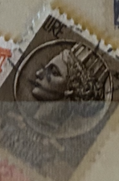
| SOURCE | TITLE| IMAGE MATCH | click to source page |
| allnumis.com | 100 Lire - Coin of Syracuse, Miscellaneous - Italy - Stamp - 51467 | 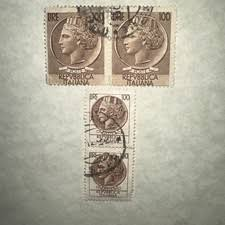 |
| eBay | Rare Repubblica Italiana Lire 100 & 20 Used Stamps Lot of 4 | eBay | 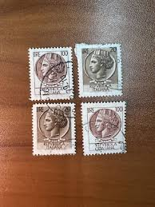 |
| kindpng | Postage Stamp Png Image - Postage Stamp Stamp Png, Transparent Png - kindpng | 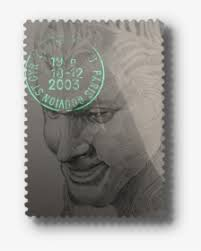 |
| Linns Stamp News | Applications available for Ibra 2023 exhibition in Germany | 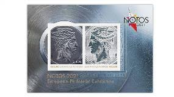 |
| PicClick CA | ITALY, 25 LIRE, Italian Postage Stamp, Poste Repvbblica Italiana, MH $20.00 - PicClick CA | 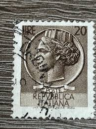 |
| eBay | Green Used Postage Italian Stamps for sale | eBay | 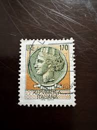 |
| Todocolección | italia 1968 scott 997 sello ** vista del centro - Buy Antique stamps of Italy on todocoleccion | 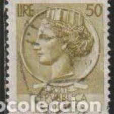 |
| HipStamp | Browse Listings in Europe / HipStamp | 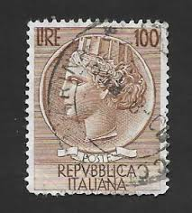 |
| eBay | 100 Lire Siracusana Ruota Dent 12 1/4 Rarita' Cert. Carraro | eBay | 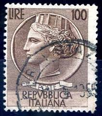 |
| eBay | RARE Italy Circa 1958-1966 Stamps 100 and 200 Lire | eBay | 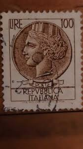 |
| Mercari | Rare, circulated, 2003 George Washington | Mercari | 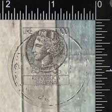 |
| Todocolección | italia 1979 scott 1365 sello ** personajes fran - Buy Antique stamps of Italy on todocoleccion | 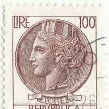 |
| PicClick | ITALIAN 100 LIRE Syracuse Stamp With Star Watermarks $8,000.00 - PicClick | 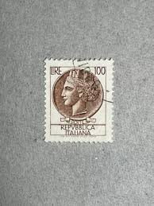 |
| Alamy | ITALY - CIRCA 1956: a stamp printed in Italy shows Amedeo Avogadro, was an Italian scientist, most noted for his contribution to molecular theory now Stock Photo - Alamy |  |
| Poshmark | postage stamp | Other | 954 Very Valuable Lire Stamp | Poshmark | 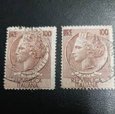 |
| Redbubble | Retro Vintage Stamp Repubblica Italiana" Sticker for Sale by marie-inks | Redbubble | 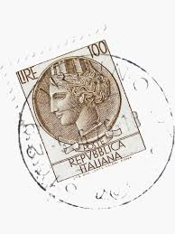 |
| Dreamstime.com | Postage Stamp Italy, 1955, Coin of Syracuse Editorial Photo - Image of heritage, historic: 206388196 | 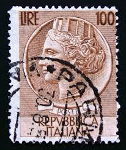 |
| Any information on Italian 100 lire Syracuse stamp? |  | |
| vividagallery.com | Italy Turrita Siracusana Forest Green Portrait Definitive Stamp Youth T-Shirt by Vivida Gallery - Vivida Gallery | 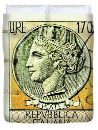 |
| Etsy | 1955 Coin of Syracuse Repvbblica Italiana 5 Lire Stamp/ Italian Stamp - Etsy |  |
| nohat | Free: Object Illusion - Object Illusion Camera - nohat.cc | 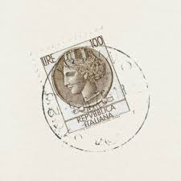 |
| eBay | Francobollo Italia Serie Siracusana Lire 20 - Italy Stamp Lire 20 - | eBay | 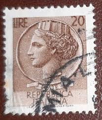 |
| Todocolección | sello poste italiane, bimillenario augusta, 25 - Buy Antique stamps of Italy on todocoleccion | 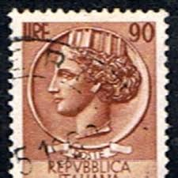 |
| eBay | 1954 ITALIA 100 LIRE SIRACUSANA TESTONI FIL . RUOTA MNH** | eBay | 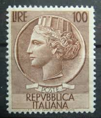 |
| Todocolección | italia - regno - 1929 - serie ”imperiale” perfo - Buy Antique stamps of Italy on todocoleccion |  |
| eBay | POSTE ITALIANE ~ Syracusean Coin ~ 5L Gray Stamp ~ Posted/Used ~ 1953 | eBay |  |
| PicClick UK | RARE STAMP OF Italy 30 Lire Republica Italiana Star Water Markings £99.00 - PicClick UK | 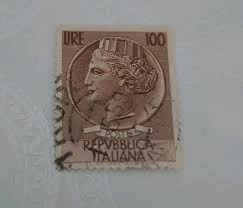 |
| PicClick | 2005 USPS LUNAR New Year 24K Gold Layer .999 Silver Year Of The Ox Stamp Ingot $109.99 - PicClick | 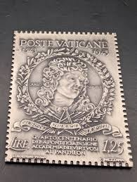 |
| eBay | MALI 1975 SUNKEN DIE PROOF COIN ON STAMP ARTIST SIGNED COINS ON STAMPS D 19572 | eBay | 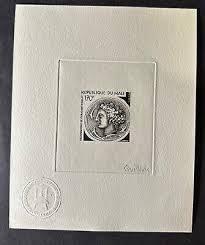 |
| USA 20 BEgEI .ូល- SVATES | 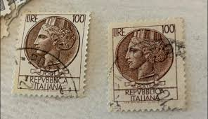 | |
| eBay | MALI 1975 SUNKEN DIE PROOF COIN ON STAMP ARTIST SIGNED COINS ON STAMPS A 19569 | eBay | 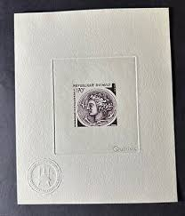 |
| eBay | Military, War Postage Italian Stamps for sale | eBay | 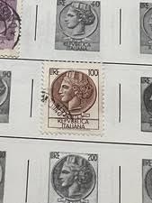 |
| lastdodo.com | Italia turrita 100 (1954) - Italy - LastDodo | 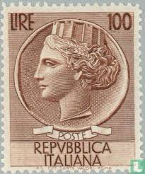 |
| eBay | Syracuse Lire 100 stars II dent. 13.1/4 non tooth. Top | eBay | 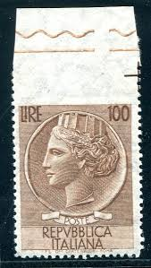 |
| eBay | Syracuse Lire 100 n. 747g pair variety serration | eBay | 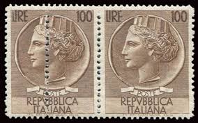 |
| eBay | Italian Republic Stamps | eBay | 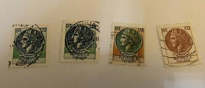 |
| eBay | Italy - 1954 Italia | eBay | 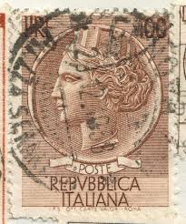 |
| Amazon.com | Amazon.com: Framed Stamp Art- Used Italy (1957) Postage Stamp - Roman Poet Ovid - Scott #721 : Toys & Games | 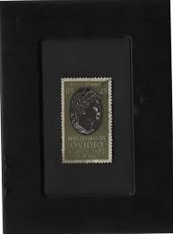 |
| eBay Australia | RARE Italy Circa 1958-1966 Stamps 100 and 200 Lire | eBay Australia |  |
| YouTube | ITALIAN RARE AND VALUABLE STAMPS/ - YouTube | 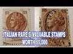 |
| eBay | VTG.3 RARE ITALY STAMPS ,POSTE REPUBBLICA ITALIANA 100 LIRE,LA SIRACUSANA~used | eBay | 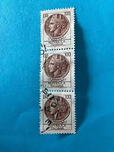 |
| ivan flore (fivan54) - Profile | Pinterest | 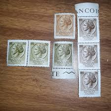 | |
| eBay | RARE Italy Circa 1958-1966 Stamps 100 and 200 Lire | eBay |  |
| OnlineStampShop | Italy Postage Stamps | 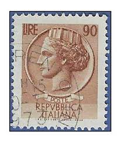 |
| Hobby of Kings | Brazil 50 Centavos Coin KM635 1994 - 1995 | 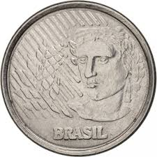 |
| Etsy | 1976 Coin of Syracuse Repvbblica Italiana 150 Lire Stamp/ Italian Stamp - Etsy | 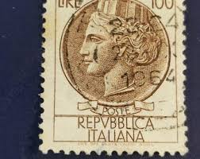 |
| Medium | Custom trained YOLOv8 model for object detection | by Kim-Mo | Medium | 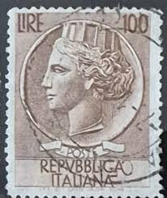 |
| vividagallery.com | Italy Turrita Siracusana Cream White Portrait Definitive Stamp Throw Pillow by Vivida Gallery - Vivida Gallery | 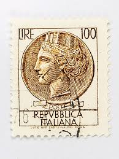 |
| eBay | italy 1955 Siracusana Two 100 Lire Stamps With Stars Watermark | eBay | 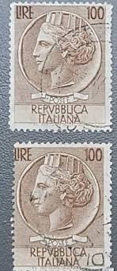 |
| Todocolección | italia nº 1593 al 1595(**) - Buy Antique stamps of Italy on todocoleccion | 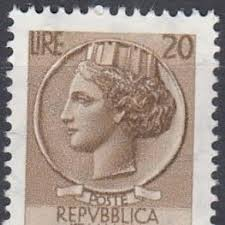 |
| vividagallery.com | Italy Turrita Siracusana Dark Brown Portrait Definitive Stamp Jigsaw Puzzle by Vivida Gallery - Vivida Gallery | 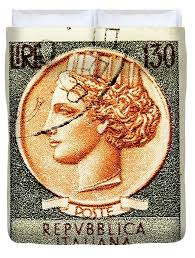 |
| My stamps for today. Please enjoy | 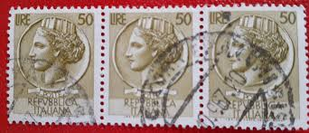 | |
| YouTube | ITALIAN OLD STAMP WORTH MONEY UP TO 2000 US DOLLARS - YouTube | 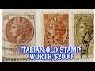 |
| Etsy | This item is unavailable - Etsy | 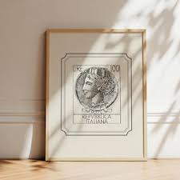 |
| Todocolección | italia - rey humberto i - valor facial 10 dieci - Buy Antique stamps of Italy on todocoleccion | 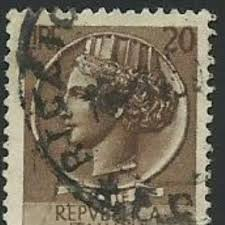 |
| eBay | Decimal Postage Italian Stamps for sale | eBay |  |
| Etsy | ITALLANA 100 Lire Syracuse Wheel Dent Carraro Italian Rare Stamp, - Etsy Israel | 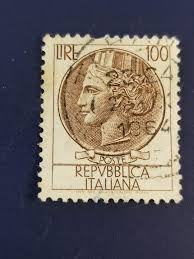 |
| eBay | Stamp Europe Italy 1953 L.12 "Italia" Scott A354 #628 | eBay | |
| eBay | Italy - 1959 Italia, New Type - Smooth Paper #2 | eBay |  |